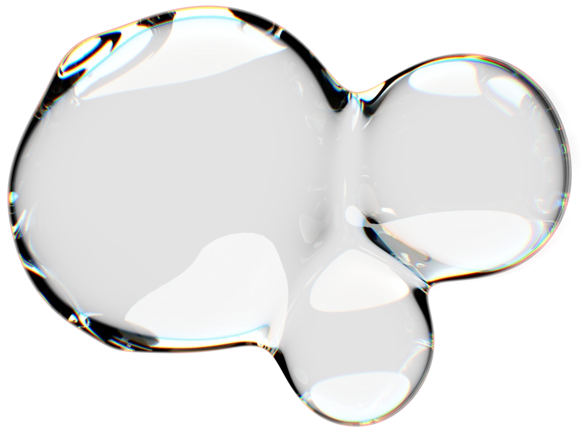
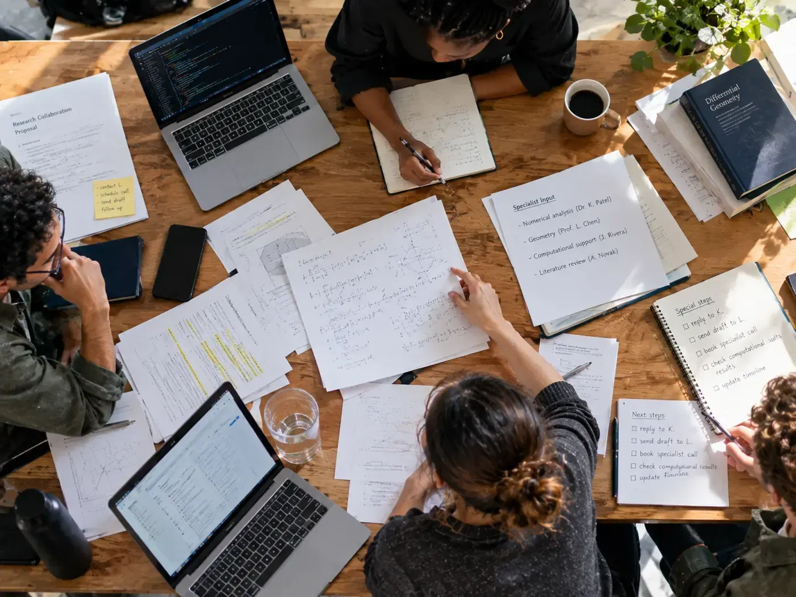
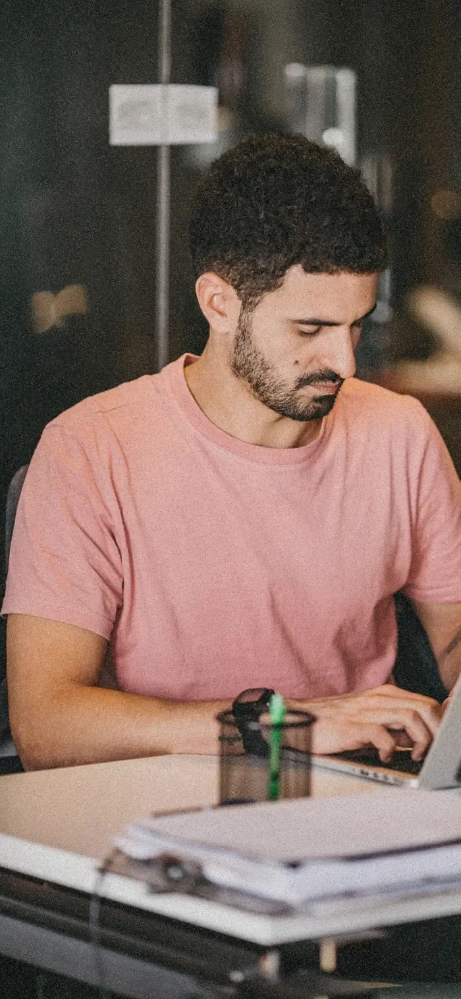
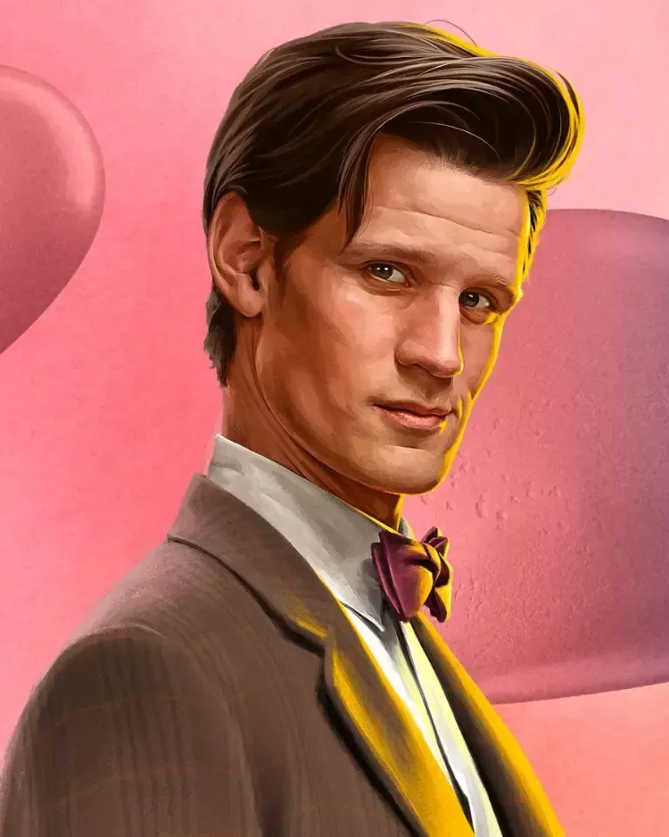
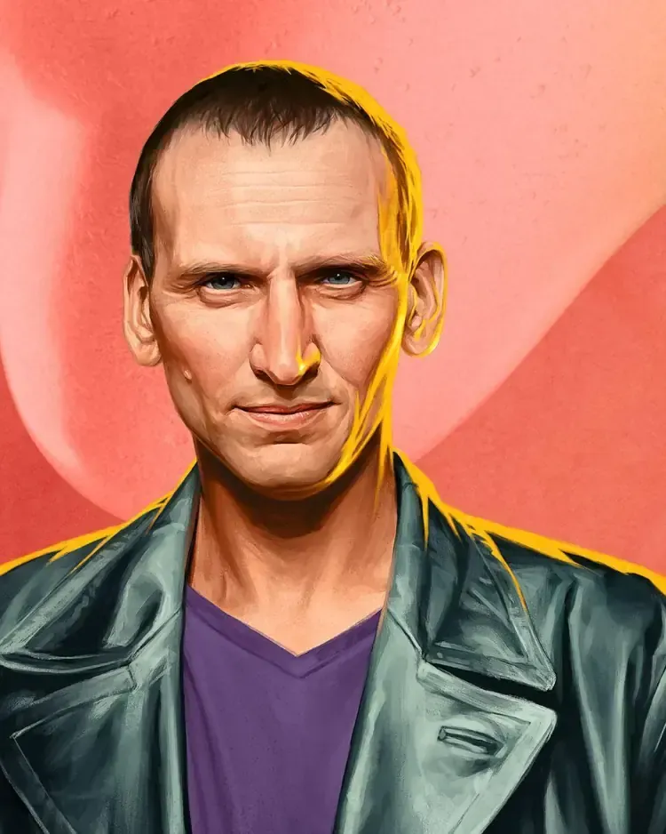
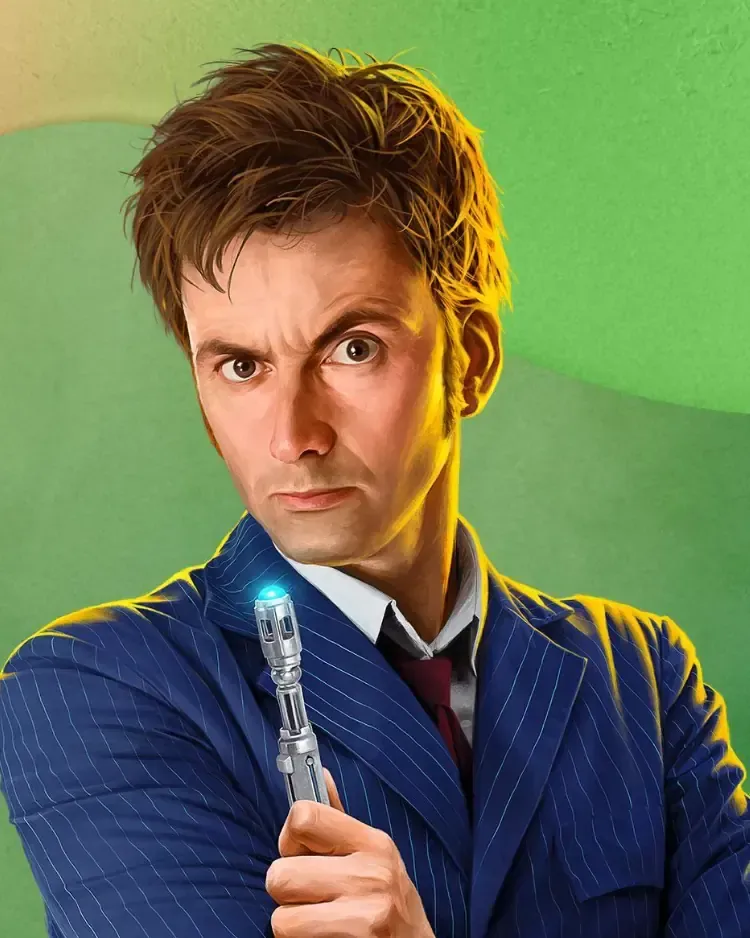

Start with the question.
You define the problem, the ambition and what a good result looks like.
You work on the mathematical problem. Your research manager finds collaborators, brings in expertise and keeps the work moving.
01 / FOR MATHEMATICIANS
A research problem can involve other mathematicians, specialist knowledge, computation, formal tools, code and AI.
Someone has to hold all of that together.

A research project creates a steady stream of work beyond the mathematics.
Find the right collaborator. Bring in a specialist. Follow up on a result. Coordinate researchers. Decide when a technical approach is worth using.
The research manager takes responsibility for making all of that happen.

Your research manager works alongside you throughout the project. You set the problem, the direction and the mathematical standard; they organise the people, expertise and practical work around it.

Every Theorex manager has research experience in mathematics and is selected and trained for management.
Theorex was built by mathematicians who know the work from both sides: research and research management.
Postdoctoral researcher, UC Berkeley · Algebra, geometry & topology

Mathematics student, UC Berkeley · Institutional partnerships & strategic collaborations

MSc in Mathematics · 10 research projects, about 30 researchers

Tell us what you're working on.
No proof required.